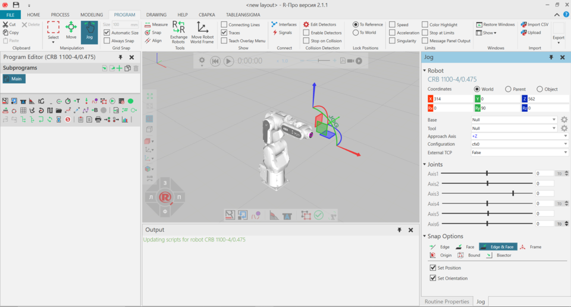

The Robot view allows you to teach and manipulate robots in the 3D world.

To access the Robot view:
The Robot view shows, by default, the following panels:
The context of the Robot view is robot programming.
You can:
By default, the following commands are shown in the Ribbon when you click the Program tab.
| Name | Description |
| Acceleration | Turns on/off acceleration limits for robots and other components in 3D world. |
| Align | Aligns a selected object using two points. Additional options are
displayed in a task pane.
Settings Snap Type |
| Always Snap | Turns on/off the automatic snapping of a selected object along an axis or plane at intervals when using the manipulator. |
| Automatic Size | Turns on/off the automatic calculation of intervals for snapping a selected object along an axis or plane when using the manipulator. |
| Color Highlights | Highlights node in 3D world exceeding its limits. |
| Connecting Lines | Turns on/off the display of lines in the 3D world that connect and show the order of points to be reached by a selected robot when executing its Main routine, including calls to subroutines. |
| Copy | Copies the current selection to the clipboard. |
| Delete | Deletes the current selection. |
| Detectors | Displays a list of options and tools for managing collision tests.
Detect collision Collision Tolerance Show Minimum Distance Selection vs World Create detector Note: Select the check box of listed detector to use the detector in collision test. |
| Detectors Active | Turns on/off all detectors in collision test. |
|
Exchange Robots |
Allows the active robot to be exchanged with a robot selected in the
3D world, thereby the robots swap positions and programs. Additional
options are displayed in a task pane.
Exchange Base/Tool
Names Apply |
|
Interfaces |
Allows components to be remotely connected in the 3D world using abstract interfaces. Additional options are displayed in a task pane. Component Interface Connections Display Network Map Show Connection Lines Show Non-abstract
Interfaces Note: By default, interface editors (nodes) for components are not displayed unless they have two matching interfaces with the selection. You can change this by editing "interfacesNodeVisibilityThreshold" in the app.config file. |
| Jog | Allows the pointer to jog and interact with the joints of robots and
other components in 3D world as well as directly select a robot, and then
use manipulator to teach robot.
Note: The origin of manipulator depends on robot configuration in the Jog panel. For example, if a tool frame is used as a moveable TCP, manipulator will be at origin of tool coordinate system, the tool frame will move with the manipulator, and the location of tool frame will be referenced as the point and orientation for defining robot positions relative to robot/base coordinate system. |
| Joint | Turns on/off joint limits for robots and other components in 3D world. |
| Measure | Measures the distance and/or angle between two points in 3D world.
Additional options are displayed in a task pane.
Mode Settings Snap Type Tip: The results of a measurement are sent to Output panel. |
| Message Panel Output | Sends info on exceeded limit to Output panel. |
| Move | Allows a selected object to be moved along an axis or plane, rotated around an axis, and snapped and aligned to a point in 3D world. |
| Move Robot World Frame | Allows the Robot World frame of a selected robot to be manipulated in 3D world. |
| Paste | Adds the contents of clipboard to active area or field of workspace depending on data type. |
| Restore Windows | Restores the workspace of current view to its default setting. |
| Select | Allows for direct and indirect selection of robot positions in the 3D
world using listed commands.
Rectangular
selection Free-form selection Select all Invert selection |
| Show | Displays a list of panels that can be shown/hidden from the current view of workspace. |
|
Signals |
Allows signals of components and I/O of robot to be connected to one another in 3D world. Additional options are displayed in a task pane. Component Signal Connections Tip: For inputs and outputs of robot, we recommend using signals 100 onward for new signal connections and actions. This helps avoid conflict with predefined actions for robots. Display Network Map Show Connection Lines Enable Signal
Toggling |
| Singularity | Turns on/off singularity limits for robots and other components in 3D world. |
| Size | Defines the interval for snapping a selected object along an axis or plane when using the manipulator. |
| Snap | Allows a selected object or arm/TCP of a selected robot to be snapped
to a location in 3D world by using one to three points. Additional options
are displayed in a task pane.
Mode Settings Snap Type |
| Speed | Turns on/off speed limits for robots and other components in 3D world. |
| Stop at limits | Stop a running simulation when an object exceeds any of its limits. |
| Stop on collision | Stops a running simulation when there is a detected collision. |
| To Reference | Locks robot positions to referenced coordinate system, thereby positions move with robot/parent in 3D world. |
| To World | Locks robot positions to 3D world, thereby positions do not move with robot/parent. |
| Traces | Turns on/off the visibility of traced motion paths for a selected robot in 3D world. |